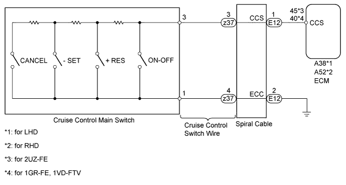
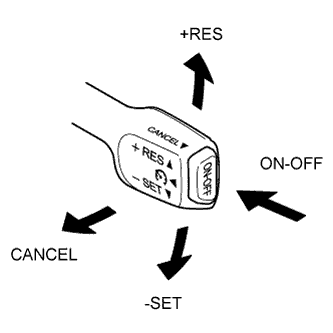
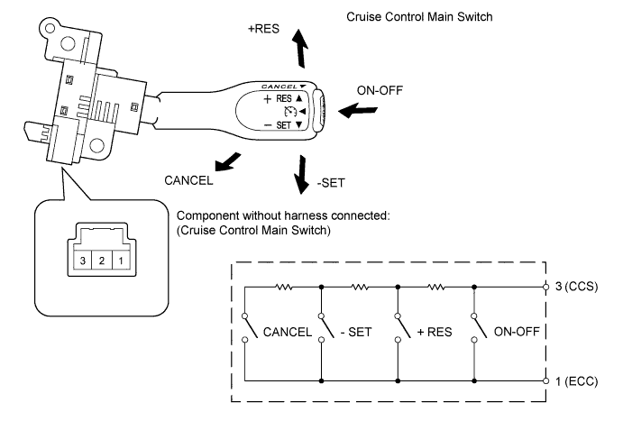
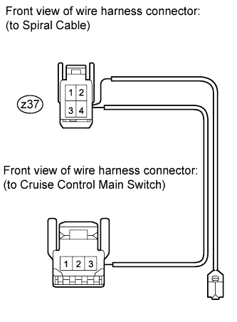
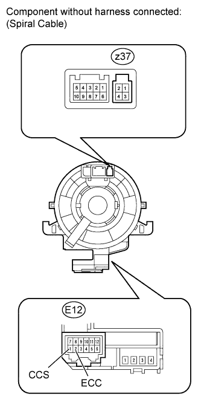
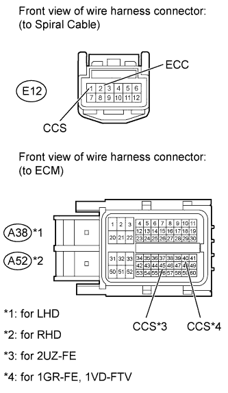

CRUISE CONTROL SYSTEM > Cruise Control Switch Circuit |

| 1.READ VALUE USING INTELLIGENT TESTER (CRUISE CONTROL MAIN SWITCH) |
 |
Using the intelligent tester, read the Data List.
| Tester Display | Measurement Item/Range | Normal Condition | Diagnostic Note |
| CCS Main SW M-CPU | Cruise control main switch (Main CPU) / ON or OFF | ON: Cruise control main switch (Main CPU) on OFF: Cruise control main switch (Main CPU) off | - |
| Cancel Switch | CANCEL switch signal / ON or OFF | ON: CANCEL switch on OFF: CANCEL switch off | - |
| SET/COAST Switch | -SET switch signal / ON or OFF | ON: -SET switch on OFF: -SET switch off | - |
| RES/ACC Switch | +RES switch signal / ON or OFF | ON: +RES switch on OFF: +RES switch off | - |
| CCS Main SW S-CPU | Cruise control main switch (Sub CPU) / ON or OFF | ON: Cruise control main switch (Sub CPU) on OFF: Cruise control main switch (Sub CPU) off | - |
|
| ||||
| OK | ||
| ||
| 2.INSPECT CRUISE CONTROL MAIN SWITCH |

Remove the cruise control main switch (Click here).
Measure the resistance according to the value(s) in the table below.
| Tester Connection | Switch Condition | Specified Condition |
| 1 - 3 | Neutral | 10 kΩ or higher |
| Pushed to +RES | 216 to 264 Ω | |
| Pushed to -SET | 567 to 693 Ω | |
| Pushed to CANCEL | 1386 to 1694 Ω | |
| Main switch pushed off | 10 kΩ or higher | |
| Main switch pushed on | Below 1 Ω |
|
| ||||
| OK | |
| 3.INSPECT CRUISE CONTROL SWITCH WIRE |
 |
Remove the cruise control switch wire.
Measure the resistance according to the value(s) in the table below.
| Tester Connection | Condition | Specified Condition |
| z37-3 - 3 | Always | Below 1 Ω |
| z37-4 - 1 |
|
| ||||
| OK | |
| 4.INSPECT SPIRAL CABLE |
 |
If there are any defects as follows, replace the spiral cable with a new one: scratches, cracks, dents or chips on the connector or the spiral cable.
Check spiral cable.
Set the spiral cable to the center position (Click here).
After setting the spiral cable to the center position, rotate the spiral cable 2.5 times clockwise, and measure the resistance according to the value(s) in the table below. Then rotate the spiral cable 5 times counterclockwise, and measure the resistance according to the value(s) in the table below.
| Tester Connection | Condition | Specified Condition |
| z37-3 - E12-1 (CCS) | Always | Below 1 Ω |
| z37-4 - E12-2 (ECC) |
After setting the spiral cable to the center position, rotate the spiral cable 2.5 times clockwise. Then while rotating the spiral cable 5 times counterclockwise, measure the resistance according to the value(s) in the table below.
| Tester Connection | Condition | Specified Condition |
| z37-3 - E12-1 (CCS) | Always | Below 1 Ω |
| z37-4 - E12-2 (ECC) |
|
| ||||
| OK | |
| 5.CHECK HARNESS AND CONNECTOR (SPIRAL CABLE - ECM AND BODY GROUND) |
 |
Disconnect the E12 spiral cable connector.
Disconnect the A38*1 or A52*2 ECM connector.
Measure the resistance according to the value(s) in the table below.
| Tester Connection | Condition | Specified Condition |
| E12-1 (CCS) - A38-45 (CCS) | Always | Below 1 Ω |
| E12-1 (CCS) - Body ground | Always | 10 kΩ or higher |
| E12-2 (ECC) - Body ground | Always | Below 1 Ω |
| Tester Connection | Condition | Specified Condition |
| E12-1 (CCS) - A52-45 (CCS) | Always | Below 1 Ω |
| E12-1 (CCS) - Body ground | Always | 10 kΩ or higher |
| E12-2 (ECC) - Body ground | Always | Below 1 Ω |
| Tester Connection | Condition | Specified Condition |
| E12-1 (CCS) - A38-40 (CCS) | Always | Below 1 Ω |
| E12-1 (CCS) - Body ground | Always | 10 kΩ or higher |
| E12-2 (ECC) - Body ground | Always | Below 1 Ω |
| Tester Connection | Condition | Specified Condition |
| E12-1 (CCS) - A52-40 (CCS) | Always | Below 1 Ω |
| E12-1 (CCS) - Body ground | Always | 10 kΩ or higher |
| E12-2 (ECC) - Body ground | Always | Below 1 Ω |
| Result | Proceed to |
| OK (for 2UZ-FE) | A |
| OK (for 1GR-FE) | B |
| OK (for 1VD-FTV) | C |
| NG | D |
|
| ||||
|
| ||||
|
| ||||
| A | ||
| ||